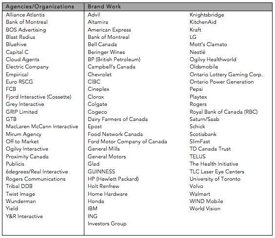

I'm a seasoned digital content strategist, writer, editor, and storyteller at heart. I love playing with ideas and words, and I have empathy for whomever engages with the experiences I help to create. I help to advance my clients’ brands with original thinking, powerful storytelling, clear and persuasive writing, strong organizational skills, and meticulous attention to detail.
● I specialize conceptual work, content strategy, long-form copy, scripts, headline and tagline writing, social media posts, and curriculum writing
● I work in automotive, financial, consumer packaged goods, telecoms, charities, pharma and more
● Basically, I'm a quick study on virtually any topic and I distill complex ideas into concise, easy-to-digest copy or narration/dialogue
My Work
OLG Play.Smart
I wrote the roulette section of the Play. Smart website. It walks players through game play steps, the odds of winning, the etiquette of game play. The challenge was to subtly weave in tips on how to play responsibly without being preachy. View site
Ford Motor Company of Canada
The Ford Electric social media campaign was intended to jolt people in terms of what they expect from a Ford ad, and create awareness of Ford’s electric vehicle offering. Our team came up with a series of quick 10 and 15 second “whimsical ads” meant to grab attention and show Ford in the EV space. The core idea was that electricity isn’t a passing fad for powering vehicles.
I've also written copy for countless other Ford and Lincoln projects, and between 2017-2017, I provided ongoing editing/Canadianization work for both the Ford and Lincoln model-year change-over vehicles, including all of the cars, CUVs & SUVs, and Trucks.
Campbell Canada
I wrote original copy and edited copy leveraged from the U.S. for this corporate transparency website for Campbell's Canada. It highlights the Canadian Campbell's product lines, how they are produced, and what's in the food. It address GMO and gluten-free ingredients and encourages consumers to engage with Campbell's in conversation about what's in their food. View site
Also, for 2+ years, I wrote Campbell's Soup Recipe Emails, V8 Emails, and social media posts. View Warm Your Soul site (pdf) and View Enjoy This Meal site (pdf)
World Vision
I helped launch the award-winning World Vision No Child for Sale site a few years ago and I have created some of the content updates for it since. There are infographics within the site, including this one that I researched and wrote on child labour in the chocolate industry.
Playtex Sport Period FAQ
Playtex wanted a stronger FAQ section for their site to engage and inform pre-teens and teens, as well as their parents/guardians. I brainstormed, researched and wrote the copy for this section of the site in addition to other marketing initiatives at the time. In writing this, I was mindful of tone-of-voice for both teens and their parents. I did not assume that everyone had a "mom and a dad" and therefore I tried to show an awareness of the new reality of blended families. View site
TD Canada Trust - Get Saving
This is a microsite I worked on a few years ago for TD Canada Trust. Our challenge was to engage Millennials to consider how to start investing their money. TD wanted a fresh approach that would speak to this demographic. Leveraging the YouTube live-blogging videos emerging at the time, the agency pitched the premise of a financially savvy video blogger who's created her own video series to demystify/explain the bank's financial instruments and share how she's been using them to help reach her own financial milestones. View site
I wrote the video scripts for "Get Saving", "Start Early", "Tools to help you Save", "What is an RSP?" and "RSPs: For much more than retirement". We tried to encourage TD to use more relaxed and casual language, but this is as far as they would go. I find the acting to be a bit stiff, but overall, the concepts are clean and clear. I also collaborated on some of the calculators, and the ideas for the Savings Tips. I wrote the majority of the savings tips, and all of the RSP & TFSA FAQs.
TD VISA Direct
I brainstormed concepts with an Art Director, and wrote the video script and site copy for this primer on transferring money overseas using VISA Direct. Our goal was to appeal to the perspectives of New Canadians concerned with finding better ways to send their money to family members back home. View site
I've worked on many other TD Canada Trust projects like the TD Music Access site, TD Waterhouse Mobile Optimization, TD Cross Border Banking, TD RRSP Online Content, UGO Wallet App and more.
Ontario Tourism Marketing Partnership
Here's an autumn edition of the Great Drives campaign for Ontario Tourism that I wrote a few years back. View site (pdf)
Food Network Canada
I worked on the launch of the foodtv.ca site back in 2001, and our "On the Burner" online magazine (within the site) was a labour of love for us. Each month, we'd develop recipes, cook, style and photograph food, write articles, interview TV hosts, create helpful guides, etc. View Thanksgiving Spread (pdf) and View Entertaining Food (pdf)
Agencies List and Brand Work
Listed in alphabetical order:

Copyright 2018 Lynne Valeriote